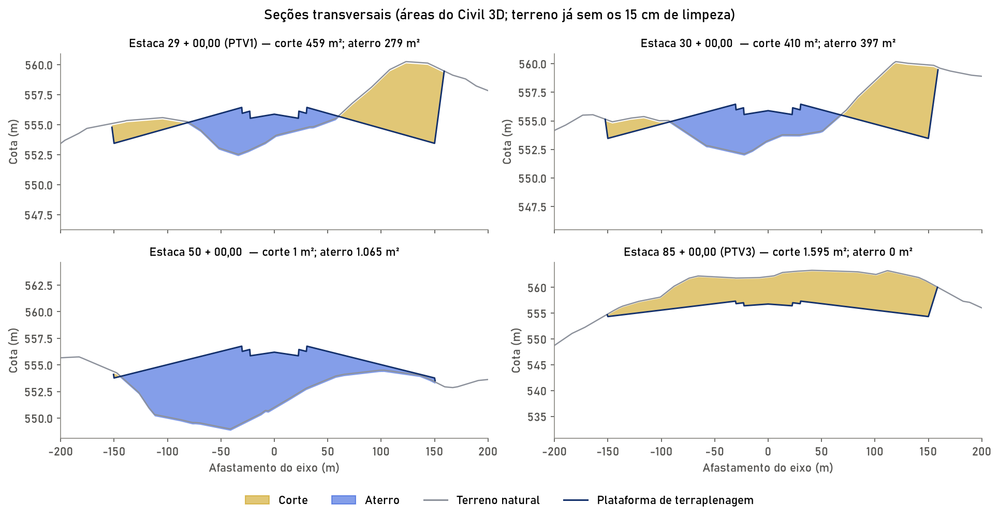
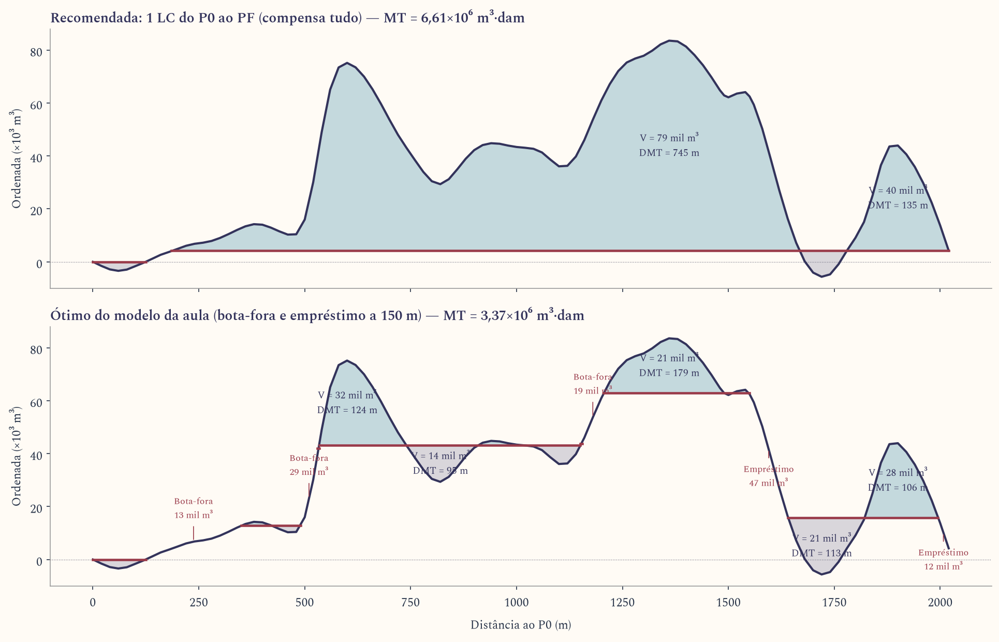

GEO-55 · Projeto e Construção de Pistas · exame do 2º bimestre
Terraplenagem da PPD 06/24 em Pindamonhangaba
O que foi feito em cada etapa, de onde vem cada número e como explicar cada escolha. Os valores são os do projeto atual (Fh = %%FH%%), os mesmos da planilha Memorial_terraplenagem_PPD.xlsx e do Civil 3D.
Premissas e de onde vêm
Toda escolha do projeto tem uma de três origens. Na apresentação, vale dizer qual é: enunciado é o PDF do trabalho; aula são os slides e as anotações das aulas 7, 8 e 9; adotado é decisão nossa, justificada.
| Item | Valor | Origem |
|---|---|---|
| PPD | 1900 × 45 m | enunciado figura; o texto diz 2300 m, a professora confirmou 1900 m em 03/11 |
| Faixa de pista | 2020 × 300 m (60 m além de cada cabeceira) | enunciado |
| Declividade transversal | PPD 1,5% · faixa 2,5%, para cada lado do eixo | enunciado |
| Acostamento | 7,5 m de cada lado, a 2,5% | enunciado largura · adotado 2,5% |
| Declividade longitudinal | máx. 1,5% · efetiva máx. 1,0% · mudança máx. 1,5% | enunciado |
| Pavimento | 1,10 m na PPD · 0,50 m no acostamento | enunciado |
| Raio vertical ≥ 30 000 m; rampa ≤ 0,8% no 1º e no último quarto da PPD | adotado Anexo 14 da OACI, código 4 | |
| Limpeza da camada vegetal | 15 cm em toda a área, fora da compensação; aterro nunca sobre ela | aula 7 |
| Espessura do pavimento | considerada: volume medido até o topo do subleito | aula 7 slide “Estrutura do pavimento” |
| Volumes | método das áreas médias | enunciado · aula 7 |
| Fator de homogeneização | Fh = %%FH%% | adotado pelo solo do sítio (etapa 6) |
| Taludes | corte 1V:1,5H · aterro 1V:2H | adotado o enunciado não dá |
| DMT de bota-fora e empréstimo | 150 m | aula 8 |
Etapa 1 do enunciado · identificação do local
Escolha do sítio
O sítio fica num terraço a oeste de Pindamonhangaba, com centro em −22,9300; −45,4993, a cerca de 556 m de altitude e 21 m acima da várzea do Paraíba. A PPD tem rumo 060°/240° (cabeceiras 06 e 24).
A escolha saiu de uma busca automática numa área fixada antes: um retângulo de 59 × 53 km em torno de São José dos Campos, até Pindamonhangaba (lat. −23,36° a −22,89°; long. −45,96° a −45,39°). Não foi o Vale do Paraíba inteiro nem o Estado. Nele há 35 066 centros a cada 300 m; tirando 10 km em volta de SBSJ e SBTA e a várzea, sobram 25 062, cada um testado em 36 rumos. Os filtros foram aplicados em quatro rodadas:
- Terraplenagem: sozinha, ela leva todos os melhores locais para a várzea (arrozais, argila mole, turfa, lençol raso, área inundável). Por isso entrou o filtro de estar pelo menos 12 a 20 m acima do fundo do vale.
- Superfícies limitadoras de obstáculos (Anexo 14, código 4, precisão CAT I) verificadas contra o modelo de terreno: quase todos os rumos têm morros furando a horizontal interna ou a cônica. Só os rumos no eixo do vale, de 50° a 70°, passam.
- Entorno: pouca área urbana nos cones de aproximação (ruído), água a 3 km (risco aviário), no máximo 25% de mata e pelo menos 10 km dos aeroportos de São José dos Campos (SBSJ) e Taubaté (SBTA).
- Sobraram dois locais. O B foi descartado porque uma rodovia corta a faixa e há uma indústria na cabeceira.
O vento (ERA5, 2015–2024, 87 672 horas) não restringe o rumo: a cobertura passa de 99,9% em qualquer direção. Mesmo assim, 060° coincide com o vento predominante de ENE.
“O local não foi escolhido a olho. Fizemos uma busca com critérios explícitos: fora da várzea, superfícies de proteção livres, entorno sem conflito e vento. Dos 25 mil pontos testados, só dois passaram. Ficamos com o que não tinha rodovia nem indústria na faixa.”
Etapa 2 do enunciado · modelo, alinhamentos e seção-tipo
Terreno, imagem e alinhamento no Civil 3D
- Terreno: modelo digital Copernicus GLO-30 (grade de 1″, cerca de 30 m). Os nós viraram pontos em UTM 23S (SIRGAS 2000) e foram triangulados (Delaunay) na superfície TN. É um modelo de superfície, então árvores e construções aparecem como terreno. O sítio tem só 4% de mata.
- TN_limpo = TN − 0,15 m: o terreno depois da limpeza da camada vegetal. É dele que se medem corte e aterro.
- Imagem georreferenciada: mosaico Esri World Imagery com 1 m de pixel, inserido no desenho com arquivo de coordenadas (.jgw).
- Alinhamento “EIXO PPD 06-24”: uma reta de 2020 m no eixo da faixa. O P0 fica na extremidade SW da faixa e o PF na estaca 101. As cabeceiras ficam em 0+060 (estaca 3) e 1+960 (estaca 98). Estacas a cada 20 m.
- Perfis: o perfil do terreno sai da superfície TN; o greide (seção 4) é desenhado com os mesmos PIVs e curvas do cálculo.
Quase tudo foi feito por scripts que comandam o Civil 3D (COM/PowerShell). As superfícies de projeto entram por LandXML. O corredor com assembly não foi montado porque o COM não cria assembly; ele está nas pendências.
“O terreno é o modelo Copernicus de 30 m importado como superfície. Criamos uma segunda superfície 15 cm abaixo, que é o terreno já limpo, e todas as áreas são medidas a partir dela.”
Seção-tipo e a espessura do pavimento
A seção é simétrica. Do eixo para fora (meia seção):
Escala vertical exagerada. Linha azul: superfície acabada. Linha ouro: plataforma de terraplenagem sob o pavimento.
- PPD: 0 a 22,5 m a −1,5%, com pavimento de 1,10 m.
- Acostamento: 22,5 a 30 m a −2,5%, com pavimento de 0,50 m.
- Faixa de pista: 30 a 150 m a −2,5%, sem pavimento.
- Taludes a partir de 150 m até encontrar o terreno: 1V:1,5H no corte e 1V:2H no aterro.
O volume de terraplenagem é medido até a plataforma de terraplenagem (topo do subleito), e não até a superfície acabada. No corte, escava-se a espessura do pavimento a mais; no aterro, aterra-se essa espessura a menos. É o caso “CORRETO” do slide 12 da aula 7, parte 2: “a espessura de pavimento deve ser considerada no cálculo dos volumes de terraplenagem”.
“A espessura do pavimento foi considerada: as seções são medidas no greide de terraplenagem, que é o greide de projeto menos 1,10 m na pista e menos 0,50 m no acostamento. O pavimento é outro serviço e não entra no volume de terraplenagem.”
Greide: um problema de otimização
O greide não foi desenhado à mão. As incógnitas são as cotas de 5 PIVs em posições fixas (0, 500, 1000, 1520 e 2020 m). O programa (SLSQP, no script otimiza_greide.py) procura as cotas que dão o menor volume total, corte + aterro, respeitando:
- rampa |i| ≤ 1,5% e mudança de rampa |Δi| ≤ 1,5% enunciado
- declividade efetiva = (cota máx. − cota mín. na PPD) / 1900 m ≤ 1,0% enunciado
- curva vertical com raio R ≥ 30 000 m, ou seja, L = R·|Δi|; espaço mínimo entre PIVs; rampa ≤ 0,8% nos quartos extremos da PPD Anexo 14
- greide compensado: corte ≥ Fh × aterro (sem empréstimo), com sobra de no máximo 1%
| PIV | Estaca (m) | Cota (m) | Curva L (m) | Rampa seguinte |
|---|
Declividade efetiva resultante: %%EFETIVA%%. Maior mudança de rampa: %%DIMAX%% (limite 1,5%). O otimizador trabalha com as estacas inteiras. Depois disso, o greide foi baixado 3 mm por igual para que o memorial, que tem seções extras em PCV e PTV, também feche sem déficit.
Com 7 ou 9 PIVs o volume cai só cerca de 2%; ficamos com 5 PIVs e 3 curvas verticais, que é o mais simples de construir.
“O greide foi otimizado: o programa escolheu as cotas dos PIVs que minimizam corte mais aterro, com todas as restrições do enunciado e do Anexo 14, e com a condição de que o corte cubra o aterro corrigido pelo Fh. Por isso a declividade ficou muito abaixo do limite.”
Etapa 3 do enunciado · terraplenagem
Seções transversais e áreas
No Civil 3D há %%NSEC%% linhas de amostragem (grupo “SL - PPD”), com 200 m para cada lado do eixo: as estacas inteiras de 20 em 20 m e os pontos notáveis (PCV e PTV que não caem em estaca inteira). Cada linha corta as superfícies TN, TN_limpo, TERRAPLENAGEM e ACABADA.
Para cada seção, as cotas de TN_limpo e da plataforma foram lidas a cada 0,25 m. A área é a integral da diferença entre as duas linhas:
A limpeza é calculada à parte: 0,15 m × largura entre os dois pés de talude. Uma seção pode ter corte e aterro ao mesmo tempo (seção mista); isso é comum aqui porque a plataforma tem 300 m de largura.
Conferência: um cálculo independente em Python, com o mesmo terreno e a mesma seção-tipo, difere do Civil 3D em %%DIFC%% no corte e %%DIFA%% no aterro (aba “Conferência”).

“As áreas são do Civil 3D: geramos uma seção em cada estaca e nos pontos notáveis, e medimos a área entre o terreno já limpo e a plataforma de terraplenagem.”
Fator de homogeneização: por que %%FH%%
O Fh relaciona o mesmo solo em dois estados (aula 7, parte 1, slide 9):
Ou seja: para fazer 1 m³ de aterro compactado é preciso escavar Fh m³ de corte. Por isso o aterro é multiplicado por Fh antes de ser comparado com o corte.
O Fh depende do solo, e não da obra. No sítio, o solo esperado é latossolo vermelho-amarelo, profundo e poroso, sobre os sedimentos do Grupo Taubaté (argilas, siltes e areias). Um solo poroso tem massa específica natural baixa e ganha bastante densidade na compactação. Em ordem de grandeza, γs in situ fica perto de 1,3 a 1,4 t/m³ e γs compactado (Proctor normal) perto de 1,6 a 1,75 t/m³, o que dá Fh entre 1,2 e 1,3. Adotamos %%FH%%, no meio da faixa.
O valor 1,1 aparece no exercício da aula. Ele é um dado de exercício, não do nosso solo. Num projeto real, o Fh sai de ensaios: massa específica in situ (frasco de areia) nos cortes e Proctor do material do aterro.
A mudança de 1,1 para %%FH%% muda o projeto: como cada m³ de aterro consome mais corte, o otimizador baixou o greide (de 9 a 30 cm conforme o PIV), o que aumenta o corte e diminui o aterro até a compensação fechar de novo.
“O Fh é uma propriedade do solo. O nosso sítio é latossolo poroso do Vale do Paraíba, que compacta bastante, então adotamos 1,25 em vez do 1,1 do exercício. Num projeto real ele viria de ensaio in situ e de Proctor.”
Memorial de volumes e compensação lateral
O memorial segue o formato das aulas 7 e 8. Cada linha é uma seção, e cada linha a partir da segunda fecha o trecho entre ela e a anterior:
Compensação lateral (coluna 10 da tabela da aula 7, parte 2, slide 10) é o volume que se resolve dentro do próprio trecho: o corte de um lado da seção vai para o aterro do outro lado, sem transporte ao longo do eixo. Só o excedente entra no diagrama de massas e precisa de transporte longitudinal.
Diferenças de forma em relação à tabela da aula: lá o Fh multiplica a área de aterro (coluna “At. cor.”) e o volume usa a semidistância; aqui o Fh multiplica o volume. Como o volume é linear na área, o resultado é idêntico.
“A coluna de compensação lateral mostra quanto do corte de cada trecho é usado no aterro do próprio trecho. É material que não sai da seção. Só o que sobra vai para o diagrama de Brückner.”
Conta à mão (fica com você)
A regra da aula de 20/10 é fazer à mão o volume entre duas estacas consecutivas. A planilha tem a aba “Cálculo à mão” só com os dados e os campos amarelos em branco. Ao preencher, a coluna “Confere?” compara com o memorial.
Par sugerido: estacas %%PAR_A%% e %%PAR_B%%, as primeiras duas seções mistas consecutivas com mais de 300 m² de corte e de aterro, d = 20 m.
| Estaca | Área de corte (m²) | Área de aterro (m²) |
|---|
Passos, na ordem do memorial: área média de corte e de aterro → volumes → aterro corrigido com Fh = %%FH%% → compensação lateral → contribuição à ordenada.
Diagrama de massas e distribuição (bota-fora e empréstimo)
As ordenadas de Brückner (última coluna do memorial) foram passadas às funções do programa em MATLAB feito para a aula de 20/10 (diagrama_massas/). O arquivo de entrada Tabelas/entrada_diagrama_massas.csv abre na interface do programa.
As convenções são as da aula:
- uma linha de compensação (LC) só compensa entre seus cruzamentos com o diagrama; acima dela o material anda no sentido do estaqueamento, abaixo, no sentido contrário;
- o que fica fora das LCs é externo: sobra de corte vai para bota-fora, falta de aterro vem de empréstimo, os dois a 150 m;
- momento de transporte MT = Σ V·DMT das ondas + V externo × 150 m, em m³·dam; DMT de cada onda = área da onda / altura da onda;
- o programa varre as cotas da LC (LC única) e, por programação dinâmica, as combinações de várias LCs com degraus, e fica com o menor MT.
| Cenário | LCs | MT (10⁶ m³·dam) | Bota-fora (m³) | Empréstimo (m³) |
|---|
Leitura: no modelo da aula, com bota-fora e empréstimo a só 150 m, o menor MT abre mão de parte da compensação: manda %%BF_LIVRE%% m³ para bota-fora e traz %%EMP_LIVRE%% m³ de empréstimo, porque levar terra 150 m é mais curto que levá-la de um lado ao outro da obra. Só que o modelo não cobra a escavação do empréstimo, que exige achar uma jazida, licenciar e escavar. Esse foi o problema de Viracopos contado na aula 7.
Na variante, o empréstimo também paga a escavação. Com os preços do exercício 6 da lista (R$ 3,20/m³ de escavação e R$ 1,60/(m³·km) de transporte), escavar 1 m³ custa o mesmo que transportá-lo 2 km. Somando 150 m do bota-fora e 150 m do empréstimo, cada m³ que deixa de ser compensado custa 2,3 km de transporte, ou 1 150 m por parcela externa. Com essa DMT externa equivalente, o ótimo passa a ser uma LC única do P0 ao PF, que compensa tudo: só os %%BF_REC%% m³ de sobra do saldo vão para bota-fora. É a solução adotada.
Detalhe para não confundir: a busca de “LC única” do programa usa a convenção do exercício 2 (a LC vale entre o primeiro e o último cruzamento com o diagrama). Como o diagrama começa descendo, a LC na cota do saldo (+%%BF_REC%% m³) só toca o diagrama no PF, e essa busca a corta. A otimização com degraus encontra a mesma LC começando no P0 com um degrau de %%BF_REC%% m³ (o bota-fora), e é ela a melhor solução com uma LC.

Ondas da solução recomendada
| Onda | De (m) | Até (m) | Sentido | V (m³) | DMT (m) |
|---|
A limpeza (%%VL%% m³) não entra no diagrama: vai para bota-fora ou para estoque, para revestir os taludes.
“Otimizamos as linhas de compensação com o programa da aula. Com bota-fora e empréstimo a 150 m, o mínimo do momento de transporte troca compensação por empréstimo. Mas, contando a escavação do empréstimo, compensar tudo é mais barato, e é essa a solução que adotamos.”
Equipamentos e por que cada um
Solo de 1ª categoria (DER-SP: escavável com lâmina e scraper), plataforma larga e plana e, na distribuição adotada, DMTs de 160 a 250 m nas ondas grandes. As razões vêm da aula 9.
| Serviço | Equipamento | Por quê |
|---|---|---|
| Limpeza e raspagem da camada vegetal | Trator de esteira com lâmina reta; motoniveladora | A lâmina reta serve para limpeza geral, cavando e amontoando; a motoniveladora faz capina de vegetação rasa. O sítio é pasto. |
| Carga e remoção da limpeza | Pá carregadeira + basculantes | A pá carregadeira remove material solto; o basculante comum (4,5 a 6 m³) leva ao bota-fora ou ao estoque. |
| Corte → aterro (DMT de 160 a 250 m) | Moto-scraper, com trator empurrando na carga | Faz as quatro operações numa só (escavar, carregar, transportar, espalhar), em solo de 1ª categoria e distâncias médias. |
| Onda curta perto de 1640 m (DMT de 42 m) | Trator de lâmina | Empurra o material em distância curta, sem carregar. |
| Camadas compactas (eventual) | Escarificador no trator | Desagrega o terreno antes da escavação. |
| Regularização a 1,5% e 2,5% e taludes | Motoniveladora | Acabamento da ordem de meio centímetro. |
| Compactação do aterro | Rolo pé-de-carneiro | Compacta do fundo para o topo; indicado para solo coesivo (argiloso), o que predomina no sítio. |
| Lentes de areia (eventual) | Rolo vibratório | Adensa solos arenosos pela vibração. |
| Topo do subleito | Rolo pneumático | Sela a superfície e compacta solos finos. |
| Não usados | Drag-line, fresadora, vibroacabadora | A drag-line é para solo mole e saturado (a várzea, descartada); fresadora e vibroacabadora são do pavimento. |
Perguntas prováveis
O diagrama fecha em zero. Então não há transporte?
Há. Fechar em zero só quer dizer que, no total, corte e aterro corrigido se equilibram. As ondas do diagrama mostram que o morro do meio abastece os aterros vizinhos, com DMTs de centenas de metros.
Por que não usar o Fh = 1,1 da aula?
Porque o Fh é do solo, e o 1,1 era dado do exercício. Latossolo poroso tem densidade natural baixa e compacta bastante; 1,25 está no meio da faixa típica de 1,2 a 1,3. Num projeto real, ele viria de ensaio.
Como a camada vegetal entra no cálculo?
Toda a área entre os pés de talude perde 15 cm. As áreas de corte e aterro são medidas a partir do terreno já limpo, então o aterro nunca fica sobre a camada vegetal. O volume da limpeza (%%VL%% m³) não entra na compensação.
O que é a compensação lateral?
É o volume que se compensa dentro do próprio trecho: corte de um lado, aterro do outro. Na planilha é o menor valor entre o corte e o aterro corrigido de cada trecho. Ele não precisa de transporte longitudinal.
Por que o ótimo do programa não é a solução adotada?
Porque o modelo da aula cobra só o transporte. Com bota-fora e empréstimo a 150 m, ele prefere jogar fora o corte e escavar um empréstimo. Quando a escavação do empréstimo entra no custo (preços do exercício 6), compensar tudo sai mais barato.
As áreas são mesmo do Civil 3D?
Sim: %%NSEC%% linhas de amostragem, seções das quatro superfícies, cotas lidas a cada 0,25 m. Um cálculo independente dá %%DIFC%% de diferença no corte.
Por que o volume é tão grande?
Porque a faixa inteira de 300 m foi nivelada a 2,5%, como na figura do enunciado, num terreno ondulado. São cerca de 650 mil m² de plataforma. (A nota de serviço da aula 7, que nivela só ±75 m, é apenas um exemplo e não vale para este projeto.)
Dúvidas abertas para a professora
- Taludes 1V:1,5H no corte e 1V:2H no aterro.
- Fh = %%FH%% adotado para o solo do sítio.
Pendências para 17/11
- Corredor (assembly da seção-tipo) e Compute Materials no Civil 3D.
- Pranchas (planta, perfil, seções) e memorial final em PDF.